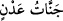
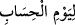

İbn Abbâs (r.a.) der ki: (Cennetteki) hiçbir şey için yok oluş söz konusu değildir.
Meyvesi yenen bir şeyin yerine yenisi geldiği gibi, yenen bir hayvan veya bir kuş da
canlı olarak yerine geri döner.
et-Te’vîlâtü’n-Necmiyye’de (__WORD__)’den (__WORD__) ifâdesine kadarki kısmı işârî
olarak şu şekilde tefsir eder: Bütün bu özelliklere sâhip mezkûr cennetlerin kapıları
muttakîlere açıktır. Cennetin bazı kapıları yaratılmışlara bazı kapıları da Yaratıcı’ya
açıktır. Fakat bunlardan hiçbiri muttakîlere kapanmaz. Onlar da yaratılmışlara has
kapılardan girip buradaki nimetlerden istifâde ettikten sonra Yaratıcı’ya has kapıdan
çıkarlar ve “Muktedir bir hükümdarın katında, doğruluk meclisinde” (el-Kamer
54/55) konaklarlar. Cennetlikler diye cennet nimetleri kendilerini esir etmez, tıpkı
dünya nimetleri kendilerini dünya ehli etmek için bağlamadığı gibi. Aksine, Allah onları
her iki cihanın da hapsetmesinden kurtarmış ve kendilerine her iki konakta konaklamak
zevkini tattırmış; onları ehlullahtan ve gözde kullarından eylemiştir. “Ona bitmek ve
tükenmek yoktur.” Yâni bunlar bizim kendilerine ezelde nasîbetmiş olduğumuz şeyler
olup ebediyyen yok olmayacaklardır. Bu durumda aklı başında olanların fânî arzuları
bırakıp bâkî zevklere yönelmeleri gerekir. Zira fenâ bakâya ulaştırır, tıpkı fakr u
zarûretin zenginliğe ulaştırması gibi. Her ihtiyacın sonunda bir ihtiyaçsızlık (istiğnâ)
hâli vardır.
Hikâye ederler ki: Bir adamın çok malı vardı. Ticaret yapmak istedi. Bindiği (ve
mallarını yüklediği) gemi parçalandı ve bütün malları battı. O adam bir tahta üzerinde
kaldı ve bir adaya çıktı. Yıllarca o adada tek başına yaşadı. Üzülüp sıkıldı. Bir gece
deniz kenarında oturmuştu. Saçları uzamış bir halde şu beyti okuyordu:
Varacağım âileme, şu karga yaşlanınca
Fakat heyhât, yaşlanmaz ki karga!
O sırada denizden şöyle bir ses işitti:
Çektiğin şu sıkıntının sonunda
Vardır muhtemelen bir ferahlama
Ertesi gün denize baktı, gözü büyük bir şeye ilişti. Yaklaşınca onun gelinlik gibi güzel
bir gemi olduğunu gördü. Gemidekiler bu adamı görünce hâlini sordular. O da
hikâyesini anlattı ve yaşadığı şehri söyledi. Gemidekiler: “Senin oğlun var mıydı?” diye
sordular. O da “Evet” dedi ve oğlunun özelliklerini anlattı. Bunun üzerine onlar bu
adama sarılıp öptüler ve “Şu kişi senin oğlundur, biz de onun köleleriyiz. Onun malı,
senin malındır” dediler. Saçlarını kesip güzel elbiseler giydirdiler ve rahat bir şekilde
evine getirdiler.
Böylece şu ortaya çıkmış oluyor ki hikâyedeki adam, rızkının tükendiğini ve helâk
olup gideceğini düşünürken bir de bakıyor ki Allah Teâlâ kendisine önceki durumundan
çok daha güzel bir hâl ihsân etmiş. Çünkü O’nun rızkı için tükenme sözkonusu değildir
ve ihsânı sonsuzdur.